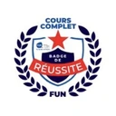

Études
Économie-Gestion, 1re année
IAE Savoie Mont Blanc, Annecy : parcours du numériqueAu programme : gestion, comptabilité, marketing et outils numériques appliqués à l’entreprise.
BUT Science des Données
UGA · parcours Visualisation, conception d’outils décisionnelsDiplôme obtenu. J’ai fait la 3e année en alternance au CEA-LITEN, après un stage dans le même service.
Le programme en détailMaster Management des Systèmes d’Information
Enseigné conjointement par l’Institut national polytechnique (Grenoble INP) et Grenoble IAEIl associe management et informatique, pour travailler à l’interface entre les services informatiques et les métiers.
Le programme en détailBUT Science des Données : Université Grenoble Alpes
- Diplôme obtenu2023–2026
- Grade de licence180 crédits ECTS
- 14 mois au CEA-LITENstage, puis 3e année en alternance
- 4 compétencesvalidées au niveau final, chacune prouvée par des projets
Délivré par l’IUT2 de Grenoble, ce diplôme national de trois ans confère le grade de licence (180 crédits ECTS). Parcours Visualisation, conception d’outils décisionnels.
Au programme : SQL et entrepôts de données, statistiques (ACP, classification, tests), datavisualisation, Python et R, gestion de projet.
J’ai passé 14 mois au CEA-LITEN, dans le même service : un stage d’avril à juin 2025, puis toute la 3e année en alternance, jusqu’en juillet 2026.
Erasmus+ à l’Université d’Économie de Prague : une semaine de Business Intelligence sous Power BI, entièrement en anglais. Notre équipe a remporté le challenge data de clôture. Le détail côté expériences
Le programme est national : arrêté par le ministère de l’Enseignement supérieur, il est identique dans les 15 IUT qui proposent le BUT Science des Données.
Il s’organise en quatre compétences, dans l’ordre du cycle de la donnée : la traiter, l’analyser, la restituer, puis outiller la décision.
Ci-dessous, chaque compétence avec ce qu’elle recouvre, et les projets qui le prouvent.
Composantes et preuves
- Intervenir sur tout le cycle de vie de la donnée : ajout, modification, extraction, suppression espace d’avis du site la Ligabase de données fitness
- Choisir le modèle de données adapté au besoin entrepôt en étoilemodèles conceptuel et logiqueschéma en étoile du reporting
- Documenter pour le public visé guide pour les 20 gestionnairesdocumentation de mes outils, en anglais
- Traduire une demande métier en programme méthode relevée, puis automatisée en VBAcahier des charges de Grenoble Foot 38
- Écrire un programme structuré et documenté application ACV en Python orienté objet
- Choisir les librairies et les langages adaptés BeautifulSoup et Pandas pour la NBAD3 pour la saison ATP
Composantes et preuves
- Tenir compte du contexte de l’étude : clinique, économique, sociodémographique cirrhose, 600 patientsremplissage des hôtelseau potable dans 235 pays et territoires
- Dégager les grandes tendances et l’information principale 2062 au rythme actuel3 076 matchs ATPle service compte plus que les balles de break152 ans de rugby
- Choisir la méthode adaptée à la question posée ACP et classification des patientsle modèle qui laisse passer le moins de maladestrois méthodes de prévision en concurrence
- Traiter des données mal structurées, collectées sur le web statistiques NBA lues sur des pages webclassements officiels des JO 2024
- Tenir compte de la variabilité des échantillons trois méthodes rejouées 500 foismoyenne de 100 essais répétésprévision livrée avec sa marge d’incertitude
- Mettre en œuvre l’apprentissage supervisé k-NN, LDA et CARTmaladie cardiaque, 297 patients
Composantes et preuves
- S’adapter au niveau d’expertise du destinataire graphiques lus par les gestionnairesrapports quotidiens pour le staff technique
- S’exprimer en français et en anglais, à l’oral comme à l’écrit résultats présentés en anglais à Pragueprévision présentée en anglaisvidéo qui explique nos analysesvidéos sous-titrées en anglais
- Respecter l’éthique et la réglementation des données registre de traitement RGPDdonnées internes au CEA, non publiéesdonnées du club confidentielles
- Interpréter et contextualiser les résultats, avec esprit critique une corrélation ne prouve pas une causela France ne joue qu’à partir de 19062073 sans le bond exceptionnel de 2024
- Choisir la forme de restitution adaptée datavisualisation et vidéocarte ArcGIS de 162 panneauxcarte interactive de l’eau
- Tenir compte des réalités économiques et managériales chaque heure imputée au bon contratmaintenance et coût de chaque panneau
Composantes et preuves
- Structurer les données selon leur nature et leur volume modèle en étoile, une ligne par personneentrepôt de 20 tablesentrepôt conçu avant d’être rempli
- Garantir la qualité des données et signaler l’incertitude le piège des doublonspays sans estimation nationale hachurésdonnées manquantes signaléesgroupes de patients vérifiés comparables
- Respecter le cadre éthique et juridique des données RGPD et registre de la CNILdonnées du club tenues confidentielles
- Concevoir des visualisations propres aux données métier graphiques interactifs de l’application ACVapplication RShiny livrée au TIMCtableau de bord ArcGIS
- Intervenir à chaque niveau de la chaîne décisionnelle de l’entrepôt aux tableaux de bordcollecte, mise en forme, site statiquede la base de données à l’écran
- Appliquer des méthodes de développement logiciel application versionnée sous GitLab, documentation en anglaisoutil prototypé, puis déployé
Chacun de ces outils, avec le projet qui l’atteste : mes compétences en détail
Master Management des Systèmes d’Information : Grenoble INP – Grenoble IAE
- Commencé en septembre 2026fin prévue en juillet 2028
- Stage à l’étranger3 mois minimum, du 29 mars au 20 août 2027 · lettre de l’école (PDF)
- Management et informatiqueà l’interface entre les métiers et l’informatique
Enseigné conjointement par l’Institut national polytechnique (Grenoble INP) et Grenoble IAE, école de management accréditée AACSB.
Objectif de la formation : former des spécialistes de la transformation numérique des organisations et de la valorisation de leurs données.
Trois grands domaines de formation

Certification complémentaire
- Intelligence Artificielle et Société
- Badge de réussite au MOOC de l’Université Grenoble Alpes, délivré par France Université Numérique le 22 avril 2026. Le cours explique le fonctionnement et les usages de l’IA, ses limites et ses risques, et comment l’utiliser de façon raisonnée au travail.